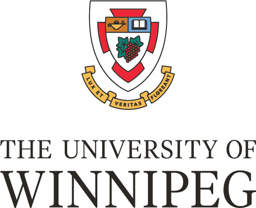

I’m an Applied Computer Science graduate with a background in Exercise Science and a lifelong fascination with how complex, interconnected systems work.
Whether it’s debugging code or tracing the ripple effects of a physiological imbalance, I’ve always been drawn to the structures behind the surface.
My journey into tech started through a competitive NSERC USRA summer research grant, where I helped build tools for analyzing respiratory data,
co-authored a published research paper,
and contributed to an open-source textbook on applied statistics. Most importantly, I got pulled, hook, line, and sinker, into the world of computer science.
From there, I transitioned into full-stack software development, data analysis, and leadership, building everything from internal utilities at an insurance
firm to an AI-powered SaaS platform for call centers.
Today, I work in the financial sector as a Data Analyst, where I modernize business intelligence by working with complex SQL queries, automating legacy reporting workflows,
and translating data into strategic insights. I’m especially passionate about mentorship, human-centered design, and using data to drive meaningful change.
I’m a lifelong learner, and my goal is to keep expanding my skill set to build tools that are not only technically sound, but intuitive, useful, and, most of all, impactful.
Data Analyst @ Stride Credit Union May 2025–Present
Stride Credit Union provided a unique opportunity to join a fledgling Business Intelligence (BI) department at a critical point
in their data journey. While they had been extracting insights on an ad hoc basis for various reports, both internal and external, they
hadn’t yet formalized their approach or had an embedded data specialist.
This was my first time working with enterprise-level data, and at first it was quite intimidating. Opening a 300+ page data dictionary
on your first day is definitely one way to realize you’re not in Kansas, or the wonderfully simple world of university class databases, anymore.
My first project, which involved streamlining a third-party report, cut its total run time from nearly a full day of work to under half an hour.
It helped me find my groove and really understand how the organization’s data lived, and also shaped how I “interview” data.
Because I was tasked with refactoring legacy queries, I developed a very critical eye for joins and filters. This eventually led me to uncover a
major issue: an important internal report was excluding nearly 30% of the members it should’ve been including, simply because an inner join was used
where a left join should’ve been.
Being part of a fledgling BI team also exposed me to process design—writing internal procedures like SQL naming conventions, proposing tool access,
and laying the groundwork for a more scalable and governed analytics environment.
Software Development Team Lead @ ccDashboard September 2024– May 2025
In order to graduate with a 4-year degree in Applied Computer Science from the University of Winnipeg, students must first participate in a
senior capstone project: a year-long course where teams of six students are paired with an industry sponsor to develop real-world software.
Each student is given a role aligning with what the faculty selection committee sees as their strengths. I was one of four students selected
to be a team lead, thanks in part to my strong academic performance, my TA work, and my leadership abilities.
This was a very fun and extremely challenging project, as our industry sponsor was a startup looking for a minimum viable product (MVP) to pitch
to potential investors, which meant we were starting from scratch.
The product was an AI-powered customizable dashboard designed to streamline call center operations. It integrated speech-to-text, NLP, and large
language models to extract real-time insights from customer calls, and allowed users to generate new widgets on the fly based on stored data.
It gave me perspective into just how much goes into developing not only standards, but also processes for a new development team. Luckily, after
my experience at Wawanesa, I had some familiarity with designing and implementing processes. I was also extremely lucky that my team was so committed
and communicative that we could quickly iterate on those processes and keep development moving with minimal friction.
It was also my first foray into graph and vector databases, as well as developing a project that integrated LLMs. As a lifelong student and someone who
loves applied learning, this was amazing, it let me get elbows-deep.
After eight intense months, including two milestone presentations, we created something beyond an MVP and far exceeded what our sponsors, and even our
faculty, expected. Our final presentation was, privately, regarded as far and away the best project and presentation by the faculty.
This amazing experience helped me hone my leadership and communication skills, as many pitfalls and disagreements occurred along the way between the team,
our sponsors, and even our faculty advisors, all of which we resolved with smiles on our faces. It also helped me refine my learning process and develop
just-in-time skills, as we went through so many iterations and pivots that, by the end, we had built the backend and data layer from the ground up nearly three times over.
Applications Developer Co-op @ Wawanesa Insurance May 2024– January 2025
Wawanesa was my first foray into the real world of software development. After learning all the best practices in the clean world of university,
it was a wake-up call to see how complex and often messy real-world enterprise code can be.
Luckily, my team had an amazing senior developer who took myself and the other co-op student under his wing. He showed us how 90% of development
is about finding where the change needs to be made and writing as little code as possible to enact it, in fact, some of the best tickets were code-negative.
He also taught me to critically review all the code before making a change.
Which is how, when I was investigating a new ticket, I discovered that three conditional input fields were doing the exact same thing,
each belonging to a different team. It took a bit of inter-team communication and a LOT of testing, but it became my first major contribution.
It also led to my largest contribution when I realized that a very common task involving forms had no formal process and was creating a lot of redundant, non-uniform code.
Over the next week, and with some help testing
weird null errors and writing so many test cases, I created a centralized utility class that slashed development time for future tasks by 80%.
My experience at Wawanesa helped form the basis of how I approach software development and my work in general.
It gave me the skills to critically assess not only development tasks, but also the overall processes behind those tasks.

B.A. Applied Computer Science @ University of Winnipeg 2022–2025
Returning as a “first year” student was very humbling in many ways, almost always being the oldest in my classes, no longer
being a subject matter expert, and starting from, what felt like, zero all over again. But for the first time in life, it felt
like I wasn’t there simply because I enjoyed learning, or that it was another stepping stone on some path, but rather because
I truly enjoyed the subject matter. I was doing all the optional exercises, thinking about how to use what I learned to solve
problems, and writing programs to solve those problems.
In fact, one of the projects on my portfolio page, the subject matcher, was one of the very first data applications I worked on.
The first iteration was horribly unoptimized, it was a whole lot of for and while loops using lists, but when that first CSV popped
out with matched participants, I hadn’t felt a rush like that since scoring a touchdown in my football days. This project has always
been close to my heart and has been iterated on many, many times throughout my degree as I learned more and more.
It wasn’t always easy, my wife can tell you about the countless hours spent studying, day and night, weekdays and weekends, but it
hardly ever felt like work. Even Data Structures and Algorithms, known as the weeder class (and rightfully so), felt fun. It changed
how I viewed problems and how I solved them, moving from thinking of everything in terms of what it was to “how can this be represented
in an abstracted and structured way?”
I was fortunate to make many great friends throughout my degree who helped me stay awake through many a grueling evening class as well
as celebrate our wins at the end of each semester. I’m also so grateful that I had the opportunity to work closely with some incredible
rofessors, and through my TA and capstone roles, discover how much I enjoy supporting others in understanding difficult material and
building something cool together.
Lab Instructor and Teaching Assistant @ University of Winnipeg 2024
I was fortunate to be asked to TA for both Data Structures and Algorithms (DSA) and Human-Computer Interaction (HCI) after
taking them myself. On the surface, these two courses might seem incongruous, as far apart as computer science courses can be, but
they were my two favourites. And in many ways, I think they represent the two halves of what it means to be a software engineer.
DSA is the core. It teaches you how to think critically and solve problems efficiently, how to turn a real-world task into a structured,
algorithmic process. But without understanding HCI, the soft skills of computer science—no matter how clever or powerful your solution is,
it’s unlikely to catch on with users. Software isn't just about code; it's about people.
This role also helped cement these important topics in my mind. I had to know the material inside and out to explain it clearly and confidently,
and be ready for the wide range of student questions that came my way. I especially enjoyed the lab instruction portion of DSA. Using a mix of analogies,
visuals, and line-by-line walkthroughs really sharpened my ability to break down complex ideas in a way that clicked for that specific student, helping them
walk away not just understanding, but feeling confident.
One of the best moments was seeing a student who’d been completely stuck on recursion finally solve a problem and say, “Oh, that actually makes sense now.”
Those little breakthroughs never got old. And after helping dozens of students work through similar problems, I got better at quickly spotting where someone’s
understanding was breaking down, a skill that’s surprisingly helpful when reviewing code, writing documentation, or leading a team through technical decisions.
It also made me realize how much I enjoy mentorship and technical leadership. That foundation in guiding students through complex problems helped me later as a
capstone team lead, navigating not just code, but the human side of collaboration and problem-solving.
Exercise Physiology and Biomechanics Research Assistant @ University of Winnipeg 2020–2023
This was the experience that changed the trajectory of my professional life.
During my time as an RA, I contributed to a range of projects. I secured a highly competitive and coveted NSERC USRA
grant to work on a study involving respiratory exercise physiology over the summer. I came out of the experience as a
second author on a published paper
and had the chance to present our findings at a national conference.
I also co-authored an open-source textbook on applied statistics. But despite those amazing accomplishments, the most
impactful result of this opportunity was that it became the gateway into the wonderful world of computer science.
I had dabbled in computer science back in high school and really enjoyed it, but it had fallen by the wayside as my sights
had been set on medical school. As fate would have it, I was reintroduced to the field through a side project during my summer research grant.
That project involved collaborating with an international team of researchers, including a software engineer turned medical doctor from Denmark, to
develop a “gold standard” program for analyzing respiratory data. My role was simply to test and report, but it showed me that all those times I thought
“there had to be a better way to analyze data”, there was.
I spent hours poring through what was, at the time, seemingly arcane code, Python scripts, NumPy arrays, and nested functions, slowly learning how it transformed
a massive CSV file with hundreds of thousands of rows into clean, digestible outputs, complete with figures and graphs. I was hooked.
The very next semester, while still working part-time, I enrolled in Programming 1. And that was it, I was all in.
B.Sc. Exercise Science @ University of Winnipeg Earned 2021
I went into Exercise Science because I’ve always been fascinated by complex, interconnected systems, especially the human body. Because of this, physiology
and biomechanics made sense to me in a way few other subjects did. It made perfect sense that a seemingly small change in one area, like an electrolyte imbalance,
could cause something seemingly distant, like muscle cramping. Or how a subtle issue in hip alignment could ripple down to foot pain and all the way up to neck tension.
Everything was connected in one way or another, and I found a lot of fun in tracing those connections.
At the time, I was planning on medical school, and this degree felt like the right path. But looking back, it was also my first real experience breaking complex systems down into individual
components and figuring out how they all interacted. That lens has stuck with me, especially when developing software.
Over the course of the program, I wrote close to 20 research papers. That process, taking a big, often vague question, researching it, breaking it down, and building it back into a clear
argument, taught me how to think. In a way, it wasn’t all that different from debugging a script or designing a software feature: isolate the basic premise of the problem, test your assumptions,
and then take what you learned to figure out the steps and build something that works.
Even then, I was already drawn to the tech side of things. I loved reading health science papers that incorporated machine learning for diagnostics or used wearable sensors for real-time
rehab feedback. I didn’t fully realize it at the time, but I didn’t just want to apply the research, I wanted to build the tools behind it.
In the end, my curiosity never really changed, only the lens. Whether it was metabolic pathways or recursive functions, I’ve always been drawn to the systems behind the surface.